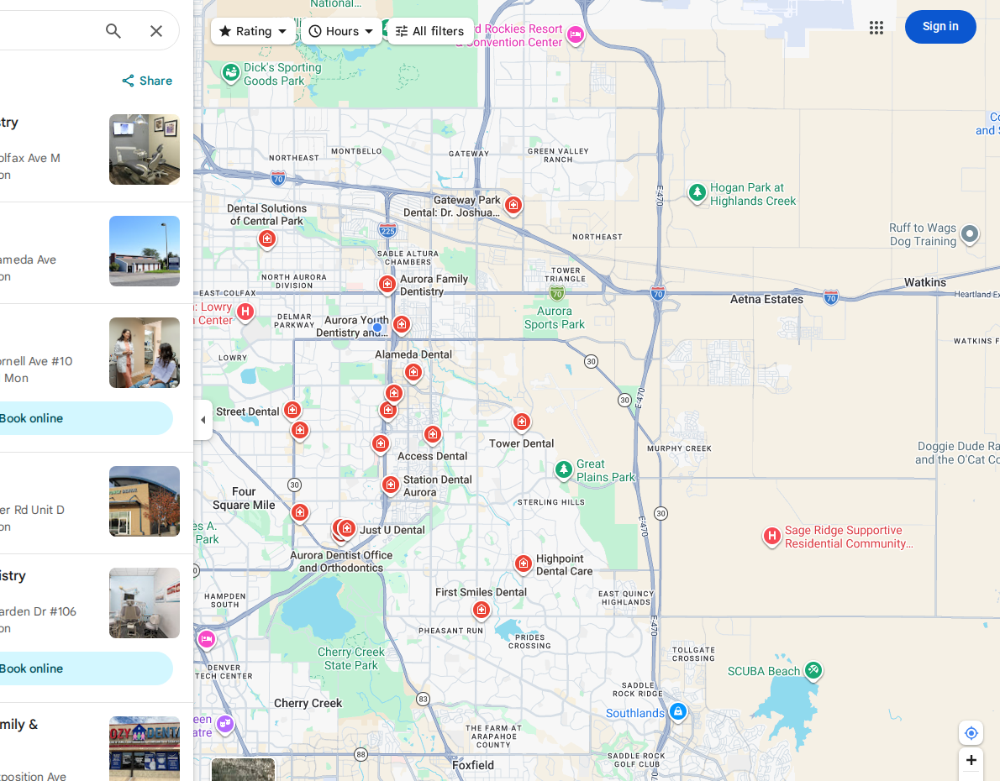

What prospective patients see when they search “Dentist Aurora CO”
A live Google Maps snapshot captured August 30, 2026. This is where patients begin deciding which practice to call.

A quick reality check
The approved source list contains 57 unique dental practice websites in Aurora. Across the eight tracked searches, different practices lead different service lanes.
These are the practices capturing the most visible local-search positions right now.
They lead the captured Maps results across general dentistry, dental implants, and orthodontics.
Aurora Family Dentistry
4.8 stars with 867 reviews in the captured snapshot.
Aurora Periodontics and Implant Dentistry
4.9 stars with 421 reviews in the captured snapshot.
Colorado Orthodontics
4.9 stars with 175 reviews in the captured snapshot.
Every dental search represents a potential new patient.
Here is what each search lane is worth in modeled monthly patient value, based on the stated search volume, contact, booking, and patient-value assumptions.
| Keyword | Monthly searches | Est. contacts | Est. new patients | Avg. patient value | Monthly opportunity |
|---|---|---|---|---|---|
| Dentist Aurora CO | 1,200 | 144 | 28.8 | $800 | $23,040 |
| Dental Implants Aurora CO | 800 | 96 | 19.2 | $800 | $15,360 |
| Dentist Near Me Aurora CO | 850 | 102 | 20.4 | $800 | $16,320 |
| Cosmetic Dentist Aurora CO | 550 | 66 | 13.2 | $800 | $10,560 |
| Invisalign Aurora CO | 500 | 60 | 12 | $800 | $9,600 |
| Pediatric Dentist Aurora CO | 400 | 48 | 9.6 | $800 | $7,680 |
| Orthodontist Aurora CO | 350 | 42 | 8.4 | $800 | $6,720 |
| Emergency Dentist Aurora CO | 350 | 42 | 8.4 | $800 | $6,720 |
| Total modeled opportunity | 5,000 | 600 | 120 | $800 | $96,000 |
Model assumptions: 12% search-to-contact and 20% contact-to-booked-patient. The keyword distribution is a working allocation of the supplied 5,000-search model, not measured Aurora keyword volume.
How dental practices in Aurora break down
Practices fall into four positions based on reputation and search visibility. Individual placement requires a full diagnostic.
Dominant
High review trust and consistent Maps visibility. Protect conversion before buying more volume.
Plateaued
Strong reputation, less visible search footprint. Validate Maps, organic, and local-content gaps.
Invisible
Limited visibility and trust signals. Build fundamentals before expecting acquisition to compound.
Emerging
Some footprint with room to strengthen patient trust, conversion, and measurement.
Where market visibility is concentrated
Search visibility is not evenly distributed in the Aurora dental market. The top three practices by captured Maps appearances hold 7 of the 24 visible positions across eight tracked searches.
Alameda Dental, Aurora Family Dentistry, Colorado Orthodontics
Capture 7 of 24 visible Maps positions across the tracked high-intent searches
Next six practices
Capture 7 of 24 visible Maps positions in this search snapshot
Remaining practices
Capture 10 of 24 visible Maps positions in this search snapshot
Share is based on appearances within the top three Maps results for eight public searches captured August 30, 2026. Ties among practices with two appearances were resolved by number of first-place appearances. This is Maps-position share, not measured traffic share.
Estimated monthly dental revenue from search in Aurora, CO
This is a transparent planning model based on supplied assumptions. Individual results vary by conversion, patient value, capacity, position, and service mix.
Why they’re winning
Maps presence
Leaders appear in the local results where patients make their first choice.
Review trust
The three validated leaders each show a 4.8 or 4.9 rating in the captured snapshot.
Service specificity
Implant, orthodontic, pediatric, cosmetic, and emergency searches return different competitive sets.
Where patients may be lost
Getting found is only the first step. Turning a searcher into a scheduled patient is where practices can lose the opportunities they worked to earn.
Online scheduling
After-hours patients need an obvious next step or the next listing gets the opportunity.
Immediate response
Delayed answers create avoidable drop-off while intent is highest.
Call conversion
Public pages cannot show whether qualified calls become appointments. That needs real call and scheduling data.
Top results observed during the audit
Maps results captured August 30, 2026. Results may vary by searcher, device, and location.
Dentist Aurora CO
- Aurora Family Dentistry
- Alameda Dental
- Just U Dental
Dental Implants Aurora CO
- Aurora Periodontics and Implant Dentistry
- Dental Associates of Aurora
- Altura Periodontics
Dentist Near Me Aurora CO
- Alameda Dental
- Aurora Family Dentistry
- Smile Aurora Dental
Cosmetic Dentist Aurora CO
- Aspenwood Dental Associates
- Highpoint Dental Care
- Alameda Dental
Invisalign Aurora CO
- Colorado Orthodontics
- Advanced Orthodontics
- Garlock Orthodontics
Pediatric Dentist Aurora CO
- Epic Dentistry for Kids
- Crossroads Pediatric Dentistry
- Colorado Kid's Dental
Orthodontist Aurora CO
- Colorado Orthodontics
- Advanced Orthodontics
- Parkfield Orthodontics
Emergency Dentist Aurora CO
- Aurora Emergency Dental 24/7
- Emergency Dental of Denver
- Dr. Hector Sawyer Emergency Dental Service
Side-by-side analysis
Maps position refers to the specific captured query shown. Review data is included only where it was captured and validated in this audit.
| Company | Maps | Rating | Reviews | Search lane |
|---|---|---|---|---|
| Aurora Family Dentistry | 1 | 4.8 | 867 | Dentist |
| Alameda Dental | 2 | 4.8 | 1,176 | Dentist |
| Just U Dental | 3 | 4.9 | 1,257 | Dentist |
| Aurora Periodontics and Implant Dentistry | 1 | 4.9 | 421 | Dental implants |
| Dental Associates of Aurora | 2 | 4.5 | 307 | Dental implants |
| Altura Periodontics | 3 | 4.8 | 1,260 | Dental implants |
| Colorado Orthodontics | 1 | 4.9 | 175 | Orthodontist |
| Advanced Orthodontics | 2 | 4.9 | 238 | Orthodontist |
| Parkfield Orthodontics | 3 | 4.9 | 367 | Orthodontist |
If nothing changes
The visible practices keep capturing attention while their review profiles and local-search history compound. The opportunity is to find the growth leak first.
Still winnable
Service-specific and local terms with different leaders. Confirm volume, position, and patient value before investing.
Contested
General dentist searches with established Maps incumbents and large review profiles.
Needs diagnosis
Any situation without a verified conversion baseline, capacity view, and patient-source tracking.
This isn’t a traffic problem
High review counts do not answer the visibility question.
Reviews demonstrate trust. Search presence has to be assessed separately by the services the practice wants to grow.
Visibility without conversion infrastructure creates waste.
More demand does not solve missed calls, unclear booking, weak first conversations, or limited capacity.
The right first move is a prioritized diagnosis.
Before choosing SEO, paid search, review work, or another tactic, identify the leak costing the practice the most.
Let’s map your path to the top positions in Aurora
Identify what is limiting your practice’s growth and leave with a clear, prioritized 90-day plan.
Book a discovery callMethodology and limitations
We reviewed eight public Google Maps searches across general dentistry, dental implants, cosmetic dentistry, Invisalign, orthodontics, pediatric dentistry, and emergency dentistry in Aurora. Practice count comes from the approved source list after removing duplicate websites and non-practice records.
Search rankings and review data are point-in-time observations captured August 30, 2026. The $96,000 figure is a transparent planning model using supplied assumptions: 5,000 searches, 12% search-to-contact, 20% contact-to-patient conversion, and $800 average patient value. It is not measured Aurora market revenue, a forecast, or a promise of individual results. Organic positions, traffic share, and site-conversion features are not claimed where they were not independently verified.